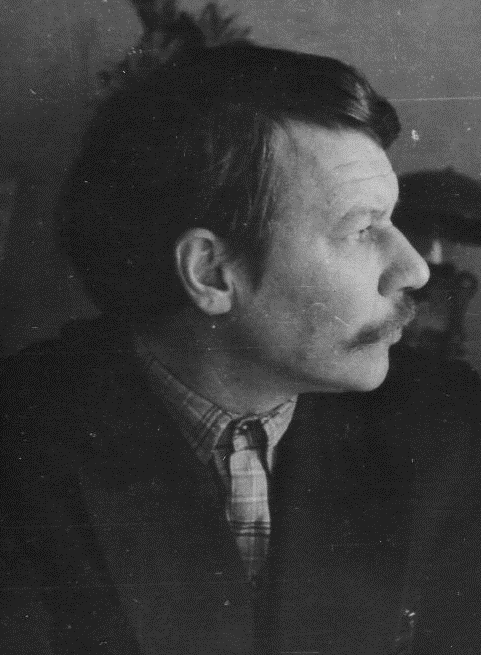

Родился 6.10.1922 года в семье учителя. Получил среднее образование в Юго-Осокинской средней школе. Евгений Михайлович поступил в Уральский государственный университет им. А.М.Горького в г. Екатеринбурге. Но закончить его не удалось. С осени 1946 г. работал учителем Юго-Осокинской школы. Преподавал историю, немецкий язык, Конституцию СССР, а позднее когда закончил ПГПИ, стал работать учителем русского языка и литературы.
Коммунист – Евгений Михайлович Курочкин работал в парткабинете Юго-Осокинского райкома ВКП/б/ в качестве пропагандиста, часто выступал с лекциями, беседами, докладами среди населения. Человек весьма образованный он имел богатую библиотеку. Ежедневно пополнял свои знания, читал и выписывал много литературы. Одновременно занимался историей села, края и всего Уральского региона. Черпал информацию от земляков, односельчан, старожилов села и окрестных деревень.
Занимался кропотливой работой в Государственных архивах г.Перми и г.Екатеринбурга. Через его руки прошло огромное количество книг, документов и прочего материала, повествующего о родных местах.
Итогом этой неустанной работы явилась летопись с. Калинино (Юго-Осокино) которая представляет большую историческую ценность. Умер Евгений Михайлович в 1991 году, оставшись в памяти односельчан добрым и отзывчивым человеком, Краеведом с большой буквы.